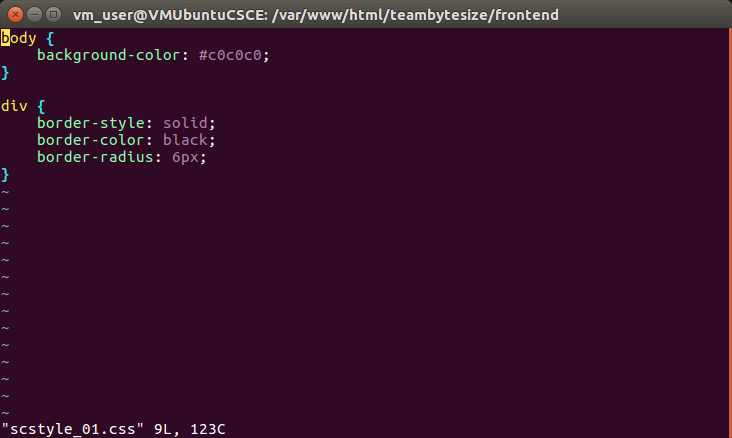

The logic for pg_connect in the site has been converted to PDO. For the most part the connections are tested; the only exceptions are on pages that haven't worked for unrelated reasons. They will quite possibly need to be rewritten.
For the moment, I'm continuing with making the code simpler. A large part of that is going to be uncoupling it from the CSS that is currently an external stylesheet. There are a lot of classes in that CSS, and without being able to actually see the CSS document, it's difficult for me to figure out how the stylesheet works.
The code on the site itself won't change for some time. For the moment I'm using one particular page to test out the CSS - it's very simple, essentially the old template we were using the build the site with all of the class names stripped out.

The above CSS and the template are both very simple. This is how I can figure out exactly how the page was organized in the first place. Once I do that, I can change it if necessary. I'll add more as the work progresses.